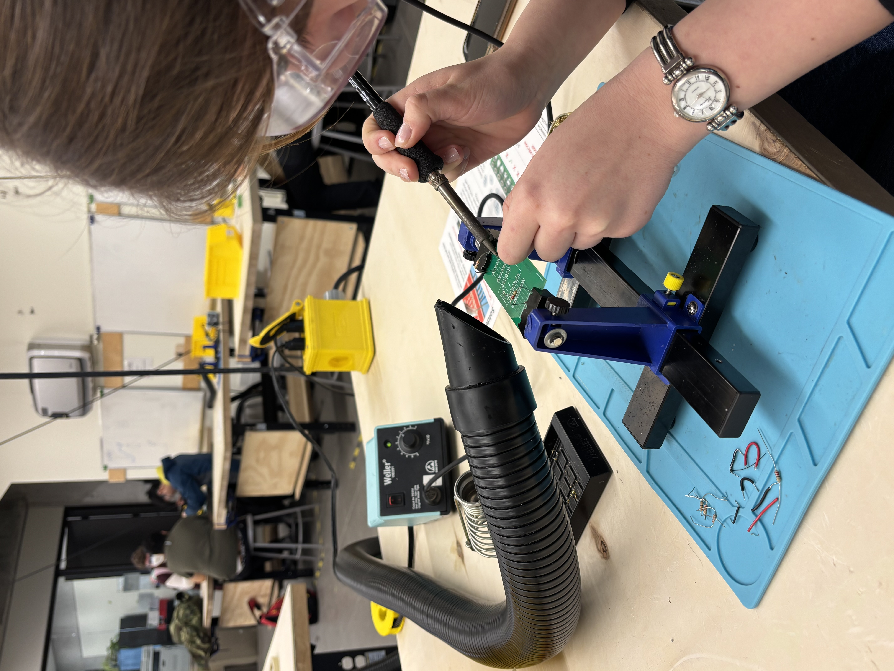
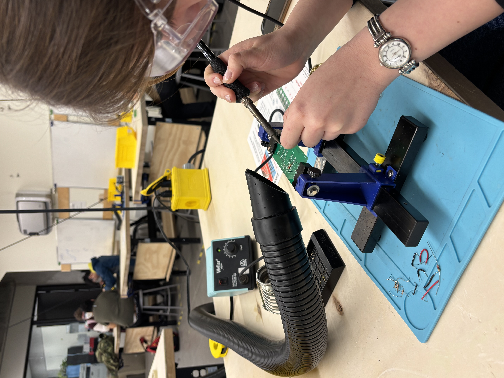

Project Timeline
UTAT Rocketry: Composites Manufacturing and Airframe Design
In progress! Stay tuned :)
One of my contributions to the CAD was creating struts and integrating these with the bulkheads for the non-structural composite aerobody.
A-Frame Build
In progress! Stay tuned :)

Spotify Data Processing
In progress! Stay tuned :)

Praxis 3: SaskWatch
Context: Worked in a team on a 3-month design project aiming to tackle wildfire impact by collecting and sharing wildfire-relevant data in remote areas of the Boreal Plains of Saskatchewan.
Contributions: I took initiative in building the mechanical components of the anemometer, and learned CAM through this process. I designed and manufactured the anemometor and part of the electronics casing using 3D modeling and printing. I also managed timelines, navigated course expectations, and kept the team on track.
Skills and Tools: CAD (Fusion360), CAM, project management, communication, organization.
Outcomes: We built and presented a functional prototype at the Praxis III Showcase.
 

L1 High Power Rocket
Context: Pursued my L1 High Power Rocketry certification through the Upstate Research Rocketry Group, as part of my involvement with UTAT. Built and launched the rocket Minerva in under 3 weeks while managing a full EngSci course load.
Contributions: Chose and assembled a kit, prepped and installed motor, designed paint job, and tested recovery system. Built the kit with mentorship from experienced UTAT teammates.
Skills and Tools: Rocket design, epoxy/adhesive bonding, motor integration, time management under pressure.
Outcomes: Launched successfully on Nov 2, 2024. Nominal flight and clean recovery. I am now officially L1 certified!


UBC ESROP: Investigating the Impact of Shift Work on Sleep Using Wearable Sensors


Context: I worked in UBC's Department of Mechanical Engineering as a summer research assistant in Dr. Wu's lab (SimPL) funded in part by the Engineering Science Research Opportunity Program.
Contributions: I conducted literature reviews and applied this learning to write MATLAB code that processes actigraphy data according to a variety of algorithms (Cole-Kripke, Sadeh, Sazonov, etc.) and visualizes the result.
Skills and Tools: MATLAB, participant communication, lab work, data visualization, presentations.
Praxis 2: Netted Fridge
Context: This project was undertaken within the context of Praxis 2 - ESC102. The aim was to design an improved
system for transporting mushrooms between Guelph and Toronto for Noki Farms. The key requirements were grouped under four main categories: optimal mushroom health, spatial optimization, durability, and efficiency. These requirements allowed us to frame our design space, leading to a design that protects the health of the mushrooms, wastes little space, can withstand foreseeable forces, and does not sacrifice ease of use and speed.
Contributions: I wrote sections of our design reports, managed timelines and tasks, and built a prototype to test and demonstrate our design concept.
Skills and Tools: Power tools (drills, bandsaw), written communication, verbal communication, FDCR framework, prototyping.
Outcomes: We created a design of a portable fridge with modular shelves made out of netting. The fridge has the option to be charged by solar power or a regular AC power supply. Additionally, the shelf frames are made of polyactic acid (PLA), a plastic made from renewable sources, and the nets are made from bamboo fibre yarn. Our team was shortlisted for the Ian and Shirley Rowe Award.

CIV102: The Sleepless Scaffold
Context: This project was undertaken as part of the course work for CIV102 - Structures and Materials. The purpose was to design a bridge made exclusively of matboard and contact cement to withstand a dynamic load applied during bridge testing.This project was completed with Zarah Mathew and Ahana Jhamb.
Contributions: I contributed to the MATLAB simulation code, hand calculations, and manufacturing. I also completed the engineering drawings.
Skills and Tools: MATLAB, time management, simulations, manufacturing.
Outcomes: The bridge was completed on time and tested under a dynamic load case. The bridge did not withstand the expected load, which was a valuable lesson about simulations vs reality.


Praxis 1: The Waxed Canopy
Context: My Praxis 1 team worked with a student generated RFP that aimed to solve the problem of carrying/storing wet umbrellas for engineering students.
Contributions: I led key design decisions, contributed to prototyping, and helped guide team collaboration by identifying strengthsm, delegating tasks, and keeping track of timelines.
Skills and Tools: Collaboration, leadership, communication, FDCR framework of engineering.
Outcomes: My team designed an umbrella made with waxed canvas, which absorbs less water than traditional nylon. This material choice reduces indoor dripping and drying time, making it more convenient for students.